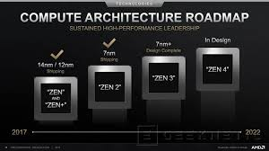

Zen: La arquitectura Zen de AMD es la base de cada procesador AMD disponible hoy en día, desde los procesadores AMD Ryzen™ de escritorio y móviles de consumo hasta los procesadores AMD EPYC™ para servidores y AMD Threadripper™ para workstations. La arquitectura Zen se centra en el rendimiento, la escalabilidad y la eficiencia.
RDNA: La arquitectura RDNA está pensada para una nueva generación de juegos con mayor eficiencia y alto rendimiento.
CDNA: La arquitectura de AMD CDNA es una arquitectura dedicada para el procesamiento basado en GPU que fue diseñada para ser pionera en la informática de clase de exaescala.
Zen 5: Zen 5 es la arquitectura CPU de próxima generación que sucederá a Zen 4, y que dará vida a los procesadores Ryzen 9000.

NVIDIA
Turing: La arquitectura Turing de NVIDIA combina el trazado de rayos en tiempo real, la IA, la simulación y el rasterizado para cambiar radicalmente los gráficos por ordenador.
Ampere: La arquitectura Ampere de NVIDIA es el corazón de las tarjetas gráficas y de los centros de datos elásticos de más alto rendimiento del mundo para jugadores y creadores.
Hopper: Hopper es una arquitectura de NVIDIA que ofrece rendimiento, escalabilidad y seguridad sin precedentes en todos los centros de datos.
Blackwell: Blackwell es la nueva arquitectura de NVIDIA que busca liderar la nueva era de la computación.